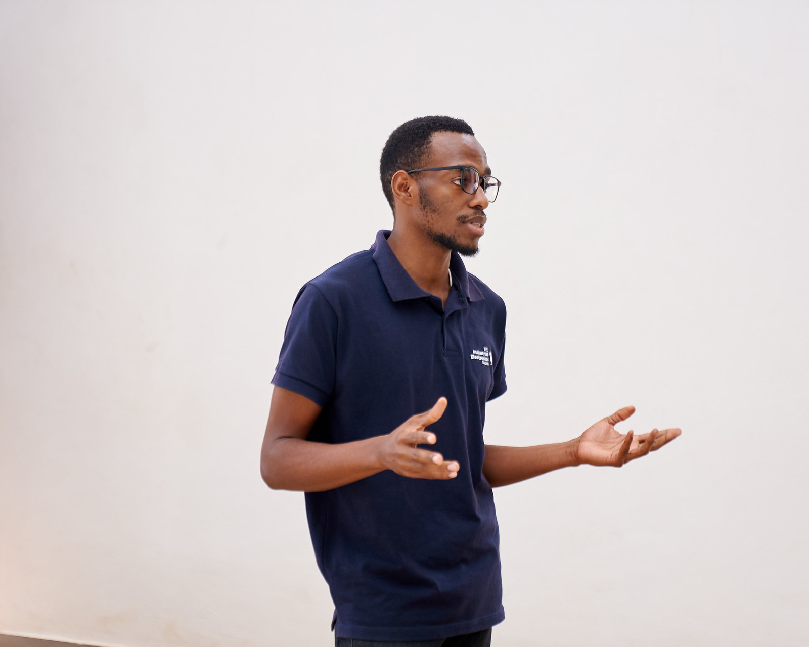
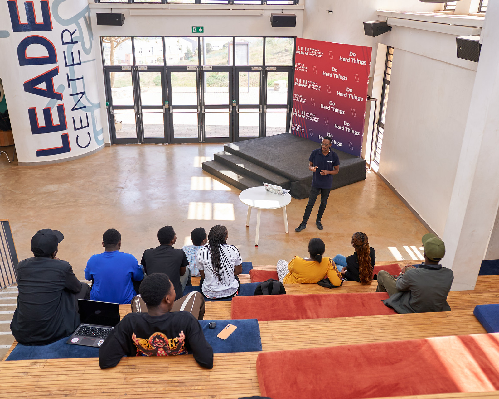

IEEE STUDENT ACTIVITIES · RWANDAConnecting students.
Connecting students.
Supporting branches.
Opportunities, resources, and support for Rwanda’s IEEE student community.
About SAC RwandaOpportunities, resources, and support for Rwanda’s IEEE student community.
About SAC Rwanda
Explore awards and contests for student branches, projects, and volunteers.
Explore awards & contests
Find guidance for running your branch, planning activities, and applying for regional support.
Find branch resourcesTo support IEEE student members and Student Branches in Rwanda, helping them access technical learning, leadership development, recognition, and the wider IEEE community.
Proposed Rwanda mission statement · for committee reviewRegional programmes and news for students and branch leaders. Follow the official links for eligibility, dates, and applications.
Read the regional announcement and submission guidance for the Student Paper Contest.
Read announcementLearn about congresses that connect students and young professionals across Region 8.
Explore congressesExplore regional funding for industry engagement, technical contests, and student leadership.
View funding programmesStudent Branches bring IEEE to campus through technical activities, volunteering, and opportunities to develop as a leader.
IEEE Student Branch resourcesRecognition for branch activities, operations, and websites.
Student Branch of the Year Outstanding Branch WebsiteAwards recognising student leadership and support from branch advisers.
Larry K. Wilson Award Counselor & Advisor AwardOpportunities to present technical work and recognise valuable student activities.
IEEE contests Darrel Chong Activity AwardRegion 8 SAC offers competitive funding programmes with specific eligibility, proposal, and outcome-report requirements.
Applications and funding decisions are managed through the official regional programmes.
Funding requirements & applicationsThis section will introduce the Rwanda SAC team and the people supporting student activities and branch development.
Committee names, roles, and photographs awaiting confirmation.Rwanda committee contact details are being confirmed. For questions about Region 8 programmes, use the regional contact page.
Contact Region 8 SACNo confirmed Rwanda events have been added yet.
View the Region 8 events calendar